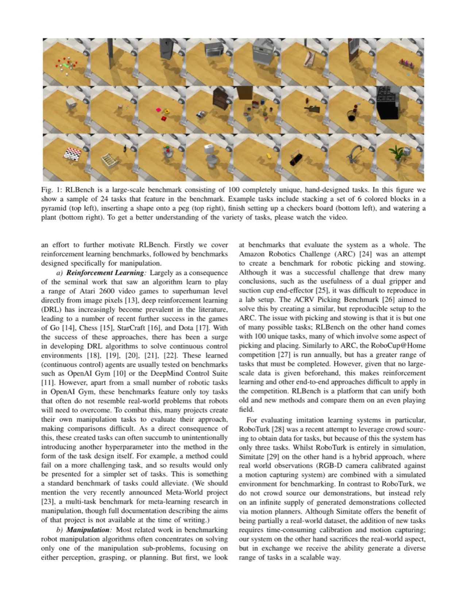
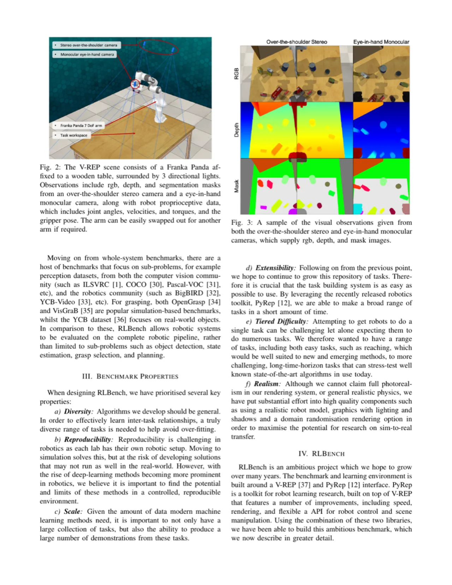
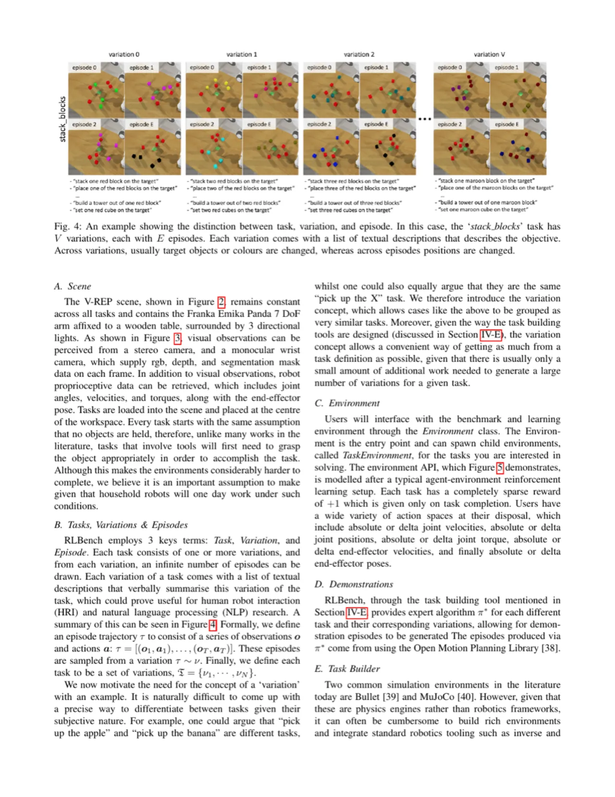
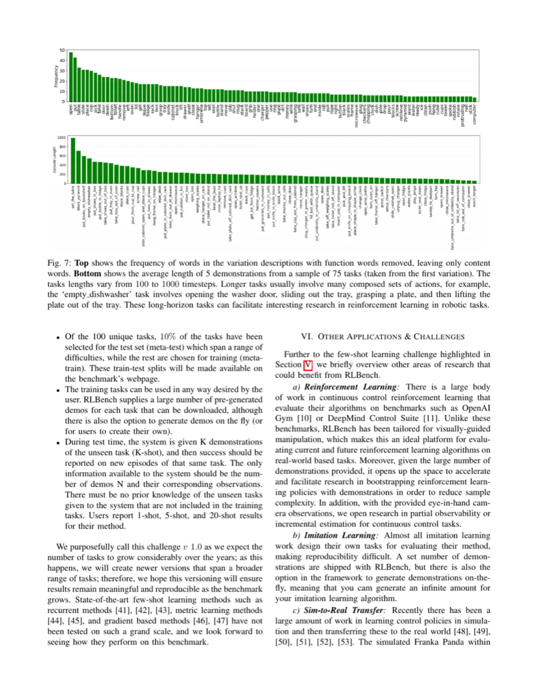

RLBench 是一个雄心勃勃的大规模机器人操作基准与学习环境，包含 100 个完全独特的手工设计任务， 难度从简单的抓取、到达，一直延伸到复杂的多步操作（如烹饪、清洁）。 平台内置运动规划器，可无限生成专家演示，同时提供 RGB、深度、分割掩码等多模态视觉观测， 旨在统一评估强化学习、模仿学习、多任务学习、视觉几何感知与小样本学习等多个研究方向。
机器人操作算法的研究面临严峻的评估碎片化问题：现有基准要么任务数量有限（如 RoboTurk 仅 3 个任务）、 要么缺乏视觉观测、要么演示数据极难获取。研究者往往各自定义私有评估集，导致方法间横向对比几乎不可能。 与此同时，小样本学习、多任务学习等新兴范式也缺乏专门的机器人操作测试平台。
"We present RLBench, an ambitious large-scale benchmark and learning environment designed to facilitate research in a number of areas, including: reinforcement learning, imitation learning, multi-task learning, geometric computer vision, and in particular, few-shot learning. We believe it is important to find the potential and limits of these methods in a controlled, reproducible environment."

RLBench 以 V-REP 仿真器与 PyRep Python API 为基础，构建了统一的机器人操作基准平台。 Franka Panda 机械臂被固定在中央工作台上，配备两路视觉传感器，并通过运动规划器自动生成高质量专家演示。 整个系统围绕三个核心概念展开：Task（任务定义）、Variation（参数变体）、Episode（执行片段）。

V-REP 场景包含 Franka Panda 机械臂，固定于工作台中央。视觉观测来自两路摄像头： over-the-shoulder stereo camera（俯视立体摄像头，提供全局视角） 和 eye-in-hand monocular camera（手眼摄像头，提供局部精细视角）。 每帧观测可包含 RGB 图像、深度图、分割掩码，并附带本体感知数据（joint angles、velocities、torques、 gripper pose、end-effector pose）。机械臂末端执行器可快速替换，适配不同抓取需求。

RLBench 将每个任务分为三个层级：
.ttt 场景 + .py 脚本）描述。
RLBench 通过内置运动规划器（Open Motion Planning Library，OMPL）可以无限生成专家演示，
无需人工遥控。每个演示（Demo）由一系列（观测, 动作）对组成，训练时用户可按需抽取任意数量的演示。
API 遵循强化学习标准接口：env.reset()、env.step(action)，动作空间支持绝对或相对的
关节速度、末端执行器速度与位姿。
任务构建工具（Task Building Tool）允许社区用户通过简单的 Python 文件贡献新任务，有望持续扩展基准规模。

论文将 RLBench 定位为评估平台，本身不提出新算法，而是在基准上运行若干代表性基线， 为模仿学习、强化学习与小样本学习研究提供参照点。
论文在多个任务上评估了以下基线方法，使用 K 个演示进行训练（K=1、5、20），并报告测试时 25 个 episode 的成功率：
| 方法 | 观测类型 | 代表性任务成功率 | 说明 |
|---|---|---|---|
| BC（Behavioral Cloning） | RGB + proprioception | 部分简单任务可达到较高成功率 | 直接监督克隆，复合型任务成功率低 |
| LSTM-BC | RGB + proprioception | 序列任务略优于 BC | 循环网络捕捉时序依赖 |
| Imitation（state-based） | 关节状态 | state-based 成功率明显高于 RGB | 揭示视觉感知仍是主要瓶颈 |
实验结果表明：训练演示数量（K）对成功率影响显著——K=20 时多数任务成功率明显优于 K=1； 复杂多步任务（如 "put_groceries_in_cupboard"）对所有基线仍极具挑战性。
论文提出了 RLBench Few-Shot Challenge v1.0，构建机器人领域首个大规模小样本基准：
评估 MAML [25]、ProtoNets [26] 等元学习基线，发现现有方法在机器人小样本操作上成功率普遍较低， 说明该挑战仍具有巨大研究空间。
论文提供了多任务学习的评估框架：系统同时在 M 个训练任务上学习， 测试时需在全部 100 个任务（含未见任务）上达到目标成功率。 实验显示现有多任务学习方法在任务数量增大后性能下降明显， 为未来研究提供了清晰的性能参考基线。
论文明确指出，RLBench 虽可生成照片级渲染，但仿真渲染与真实相机图像之间仍存在域差距。 作者提及使用高质量渲染系统并鼓励研究 sim-to-real 迁移，但 gap 本身无法在仿真内消除。 (stated by authors)
当前平台仅支持固定底座的 Franka Panda 单臂机器人，不支持双臂协作或移动机器人场景。 所有任务都假设工作台固定、物体在工作台范围内，排除了导航、全身运动控制等更广泛的操作场景。 (inferred from design)
RLBench 的无限演示依赖 OMPL 运动规划器成功找到路径。对于极度复杂或狭窄空间的任务， 规划器可能失败或生成不自然的轨迹，影响演示质量和后续模仿学习的上界。 (inferred from design)
论文明确指出，稀疏奖励（成功 +1，失败 0）对纯 RL 方法极具挑战性， 尤其是多步任务完成率极低，需要大量样本。当前基线的 RL 结果普遍较差， 说明该设置远超现有 RL 算法的能力边界。(stated by authors)